APARTAT 01
Virtualització
1. Crear una màquina virtual
Per crear una màquina virtual, haurem de prémer el botó blau «Nueva», situat a la part dreta de VirtualBox.
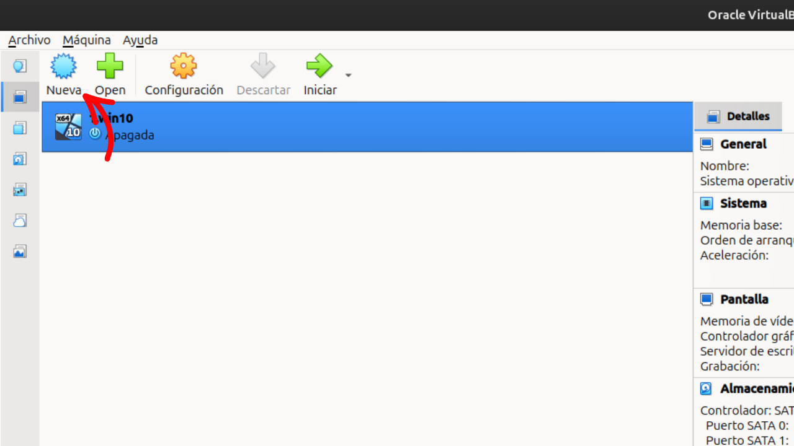
2. Configurar el nom i la ISO
Un cop dins de la configuració de la màquina virtual, haurem d'introduir el nom que volem assignar-li i seleccionar la ISO d'instal·lació d'Ubuntu.
La ISO haurà d'estar descarregada prèviament i la podrem seleccionar des de la ubicació on l'hàgim desat.
Un cop seleccionada, VirtualBox identificarà automàticament la versió del sistema operatiu. En aquest punt, és important desmarcar l'opció indicada a la captura.
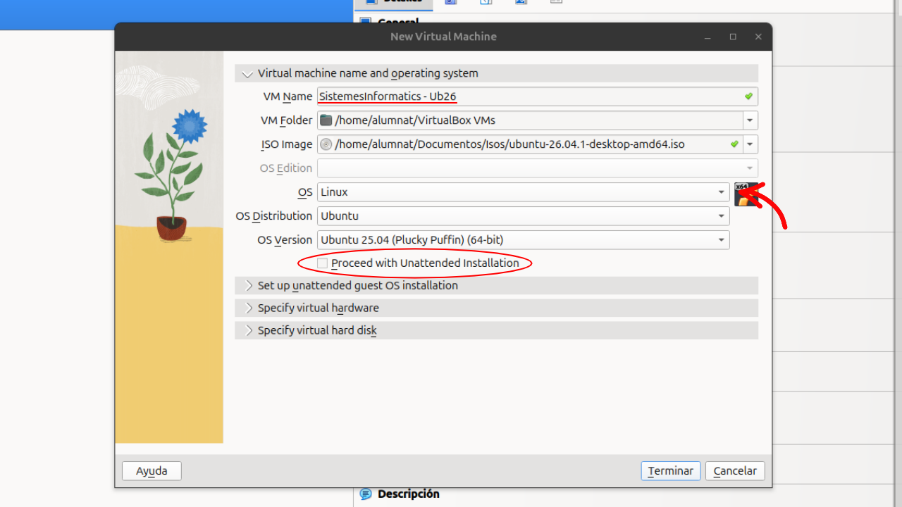
3. Assignar la memòria i els processadors
A continuació, seleccionarem «Specify virtual hardware».
Assignarem a la màquina virtual:
- 4 GB de memòria RAM
- 2 processadors (CPU)
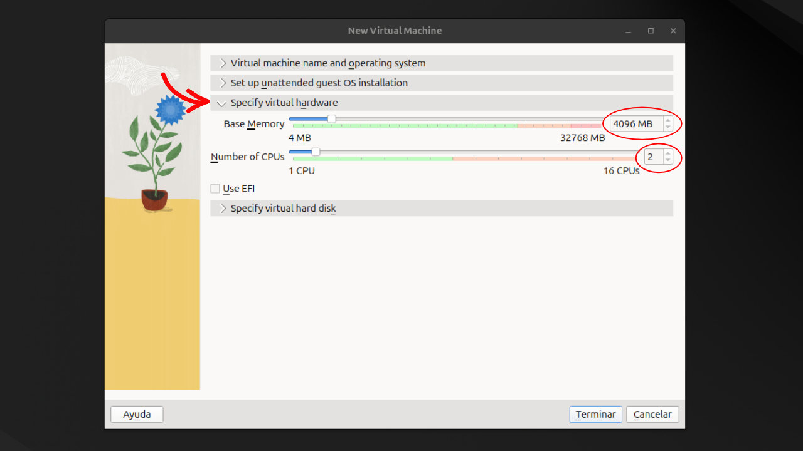
4. Crear el disc dur virtual
Accedirem a «Specify virtual hard disk» i assignarem 50 GB d'espai al disc virtual.
Aquest espai serà dinàmic, és a dir, la màquina virtual no ocuparà els 50 GB immediatament, sinó que anirà utilitzant espai a mesura que el necessiti.
Un cop configurat, podrem prémer «Terminar».
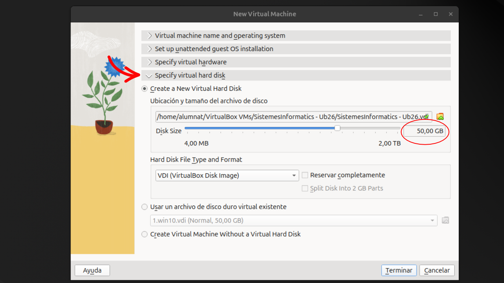
APARTAT 02
Instal·lació d'un SO
1. Iniciar la instal·lació d'Ubuntu
Quan la màquina virtual s'hagi creat, iniciarem el procés d'instal·lació i seleccionarem l'opció «Try or Install Ubuntu».
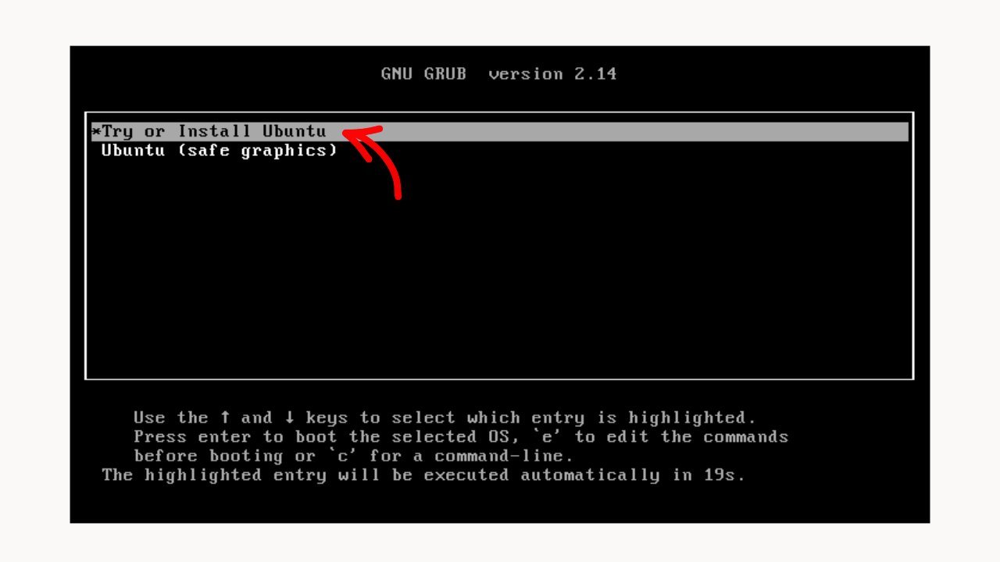
2. Configuració inicial d'Ubuntu
Durant la configuració inicial, podrem seleccionar les opcions segons les nostres preferències fins arribar a l'apartat «¿Qué quieres hacer con Ubuntu?».
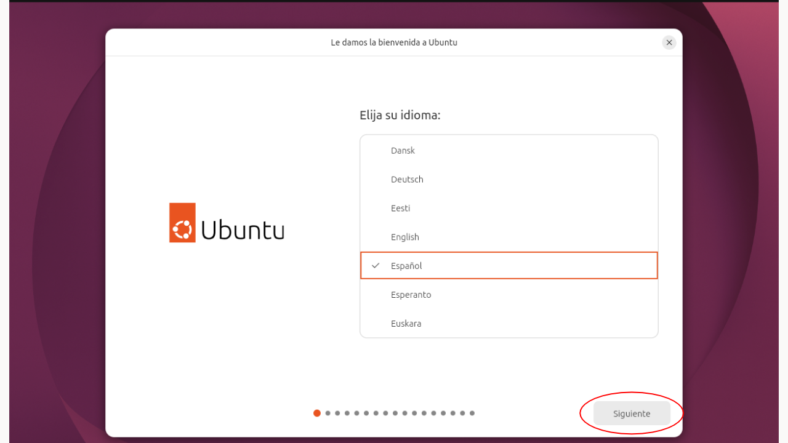
3. Iniciar la instal·lació
En aquest apartat seleccionarem l'opció «Instalar Ubuntu».
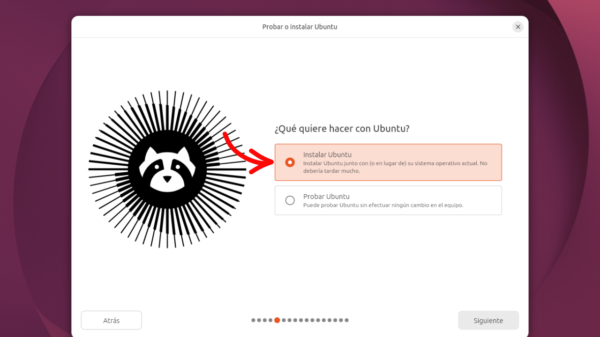
4. Seleccionar el tipus d'instal·lació
A continuació, seleccionarem l'opció «Instal·lació interactiva».
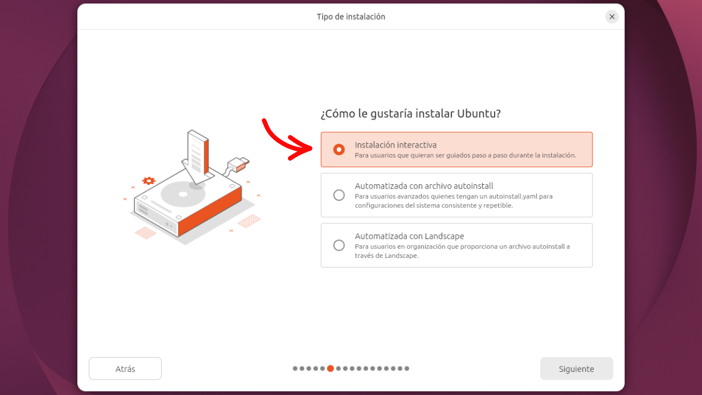
5. Seleccionar la instal·lació manual
En el següent apartat, seleccionarem l'opció «Instal·lació manual», ja que volem configurar les particions del sistema manualment. La configuració de les particions es realitzarà en el següent apartat d'aquesta pràctica.
→ Veure l'apartat de configuració de les particions
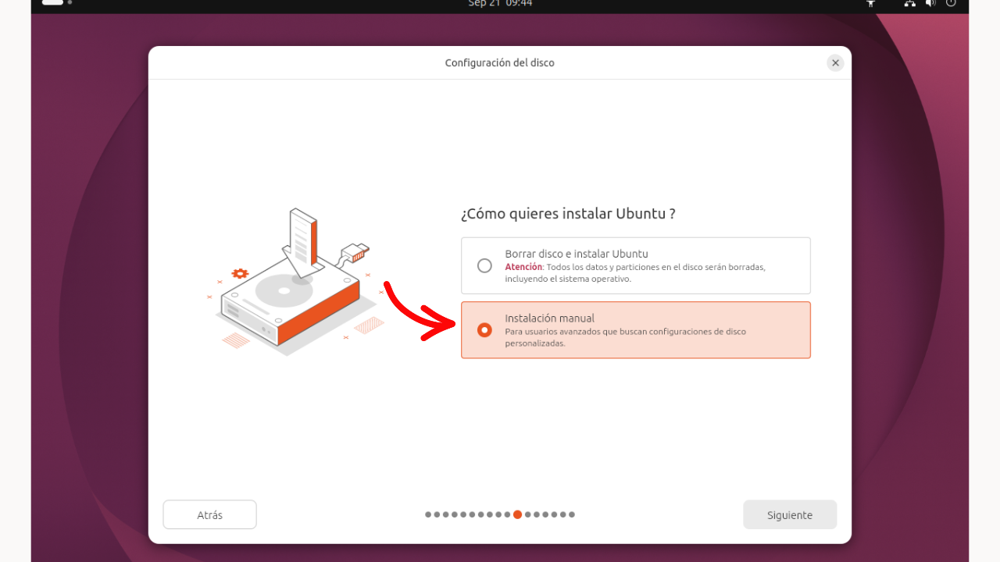
6. Crear el compte d'usuari
A continuació, crearem el nostre compte d'usuari i continuarem amb la configuració fins arribar a la pantalla de finalització de la instal·lació.
7. Reiniciar Ubuntu
Quan la instal·lació hagi finalitzat, seleccionarem «Reiniciar Ubuntu» per reiniciar la màquina virtual.
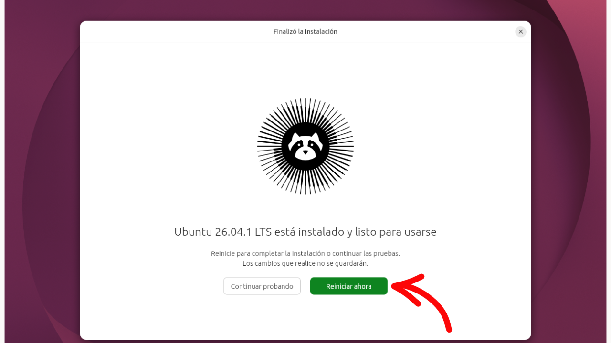
8. Instal·lació finalitzada
Un cop reiniciada la màquina virtual, ja tindrem Ubuntu instal·lat i funcionant dins de VirtualBox.
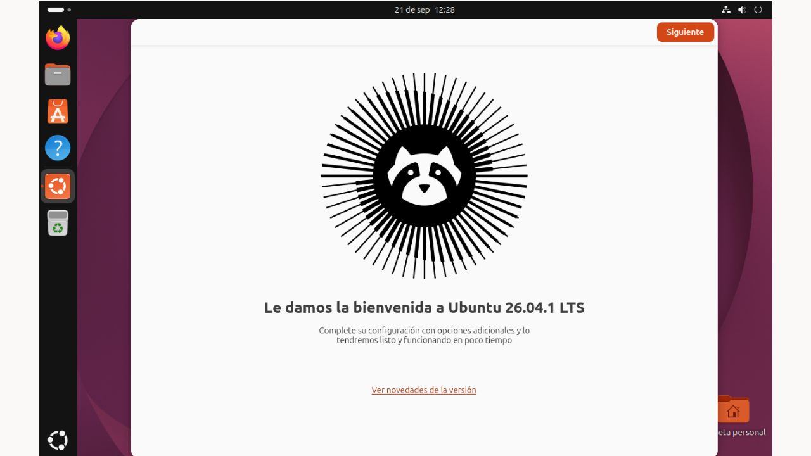
APARTAT 03
Particions
En aquest apartat explicarem com configurar manualment les particions d'Ubuntu durant la instal·lació. Aquesta configuració permet definir de manera separada l'espai d'intercanvi (Swap), els fitxers personals dels usuaris (/home) i la partició arrel del sistema (/).
1. Configuració manual de les particions
Durant la instal·lació d'Ubuntu, seleccionarem l'opció «Instal·lació manual» per poder definir les particions segons les necessitats del sistema.
Per crear una partició nova, haurem de prémer el botó «+» i indicar l'espai, el punt de muntatge i el sistema de fitxers corresponent.
En aquesta instal·lació utilitzarem la configuració següent:
| Espai | Punt de muntatge | Format |
|---|---|---|
| 8 GB | Swap | Swap |
| 12 GB | /home | Ext4 |
| Espai restant | / | Ext4 |
La partició Swap s'utilitza com a espai d'intercanvi quan el sistema necessita gestionar temporalment informació relacionada amb la memòria. La partició /home conté els fitxers i les dades personals dels usuaris. Finalment, la partició / és la partició arrel i conté els fitxers principals del sistema operatiu.
Un cop creades i revisades totes les particions, seleccionarem «Siguiente» per continuar amb la instal·lació.
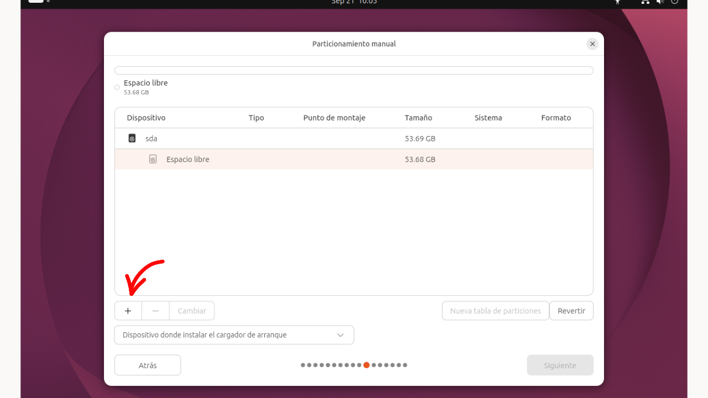
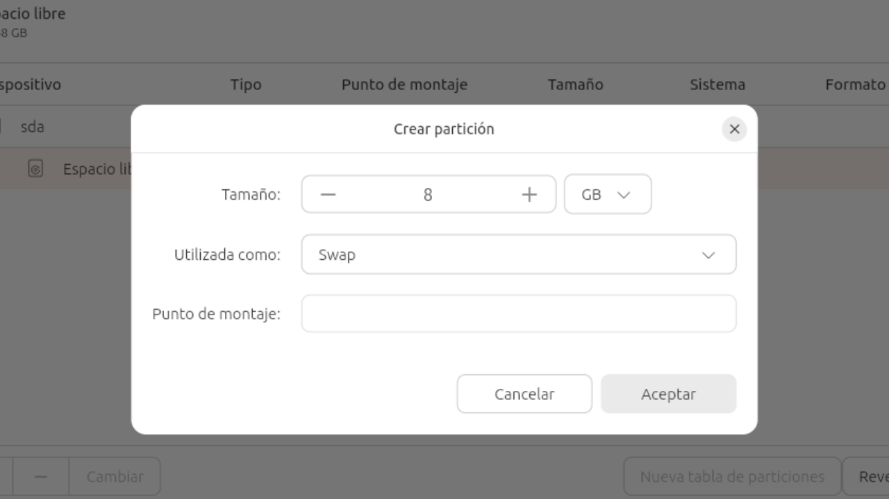
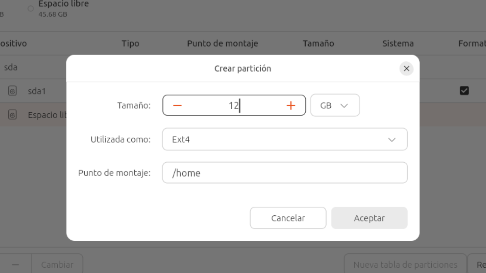
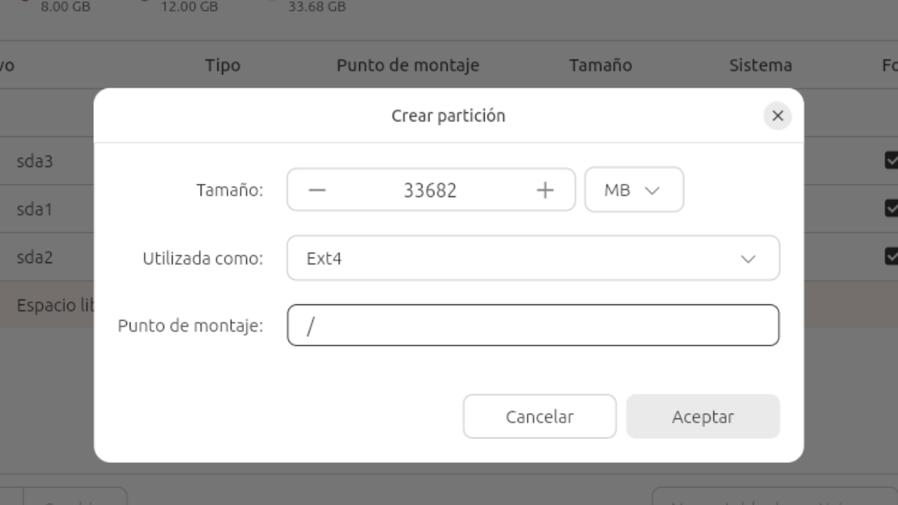
APARTAT 04
Punts de restauració
En aquest apartat es documentaran els procediments relacionats amb els punts de restauració del sistema.
Contingut pendent de realitzar.
↑ Tornar a l'índexAPARTAT 05
Gestor d'arrencada
En aquest apartat es documentarà el funcionament i la configuració del gestor d'arrencada.
Contingut pendent de realitzar.
↑ Tornar a l'índexAPARTAT 06
Xarxa bàsica
1. Comprovar la connexió a Internet
Per comprovar la nostra connexió a Internet, obrirem una terminal amb la combinació de tecles Ctrl + Alt + T i escriurem la comanda:
ping 8.8.8.8Aquesta adreça IP correspon a un servidor DNS públic de Google. Si rebem resposta als paquets enviats, significa que tenim connexió a Internet.
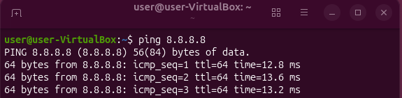
2. Comprovar el funcionament del DNS
Per comprovar si el DNS funciona correctament, utilitzarem la següent comanda:
ping www.google.esEl DNS (Domain Name System) és el sistema encarregat de traduir els noms de domini, com ara www.google.es, a adreces IP que els ordinadors poden utilitzar per comunicar-se. D'aquesta manera, podem utilitzar noms de domini fàcils de recordar en lloc d'adreces IP.
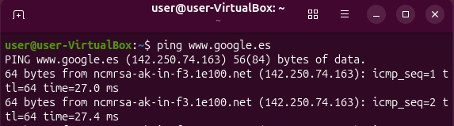
3. Accedir a la configuració de xarxa
Per poder configurar la connexió des de la interfície gràfica, accedirem a la icona de xarxa situada a la barra superior i entrarem a «Configuració de cable».
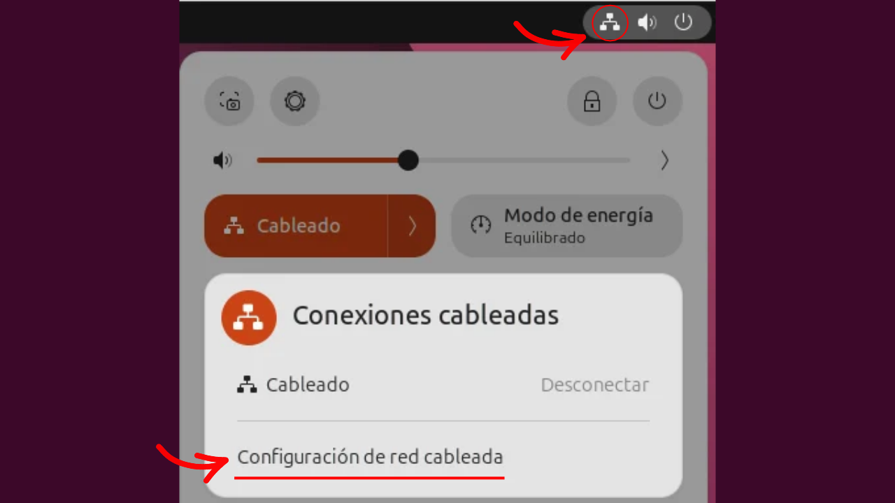
4. Obrir els paràmetres de xarxa
Un cop dins de la configuració de cable, entrarem a la icona de paràmetres (engranatge) indicada a la imatge per accedir al menú de configuració de la xarxa.
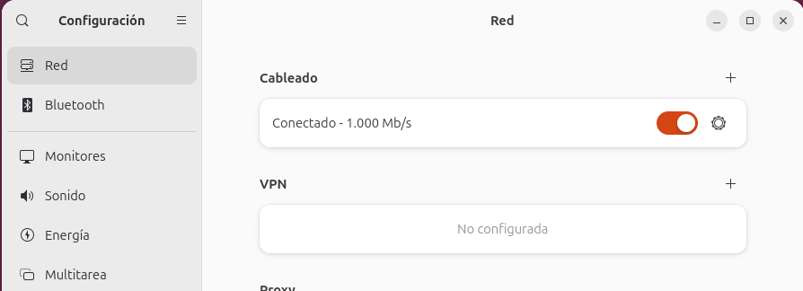
5. Configurar la IP, el DNS i altres paràmetres
Un cop dins dels paràmetres de xarxa, podem configurar diferents aspectes de la connexió, com ara l'adreça IP, el DNS, la màscara de xarxa i altres paràmetres.
En aquest cas, deixarem la configuració en automàtic (DHCP) perquè la xarxa assigni aquests paràmetres automàticament.
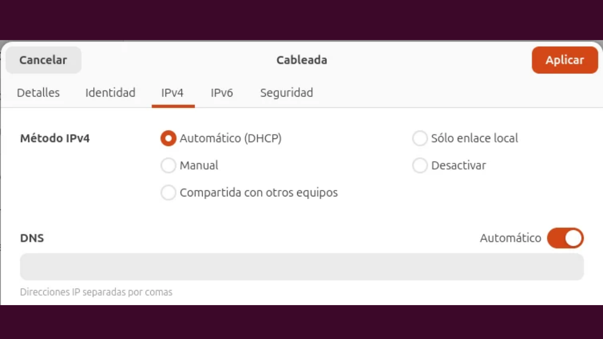
6. Configurar la xarxa des de terminal amb Netplan
Si no poguéssim accedir a la configuració de xarxa mitjançant la interfície gràfica, també podríem configurar-la des de la terminal.
Per fer-ho, accedirem al directori de Netplan amb la següent comanda:
cd /etc/netplan/Un cop dins del directori, utilitzarem la comanda ls per veure els fitxers de configuració disponibles.
lsDesprés, obrirem el fitxer de configuració amb:
sudo nano 01-network-manager-all.yaml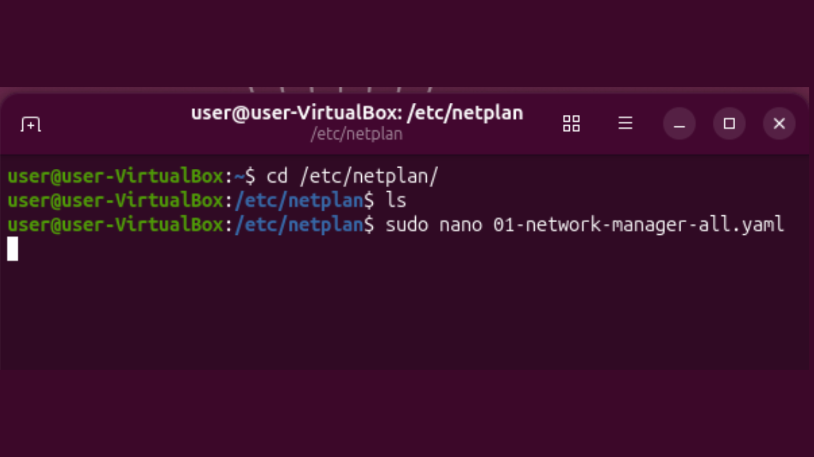
7. Exemple de configuració amb Netplan
Un cop dins del fitxer, podrem configurar els diferents paràmetres de xarxa segons les nostres necessitats. A continuació es mostra un exemple de configuració:
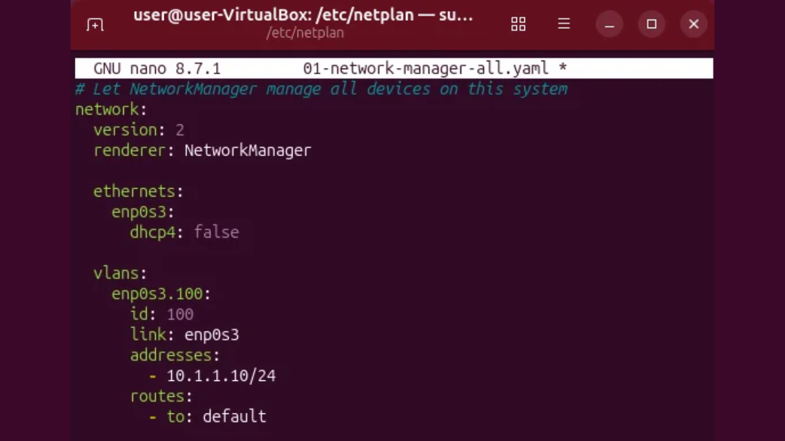
APARTAT 07
10 comandes bàsiques i necessàries de Linux
Pas inicial — Obrir el terminal
Abans de començar, obrirem el terminal amb la combinació de tecles Ctrl + Alt + T.
1. pwd
La comanda pwd mostra la ruta absoluta del directori on ens trobem actualment.
És útil per saber exactament en quin directori estem treballant.
Comanda:
pwd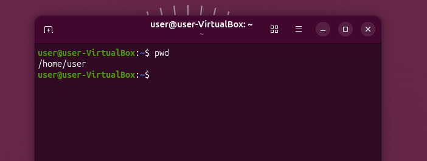
2. ls
La comanda ls mostra el contingut del directori actual.
Permet veure ràpidament els fitxers i les carpetes que hi ha dins del directori.
Comanda:
ls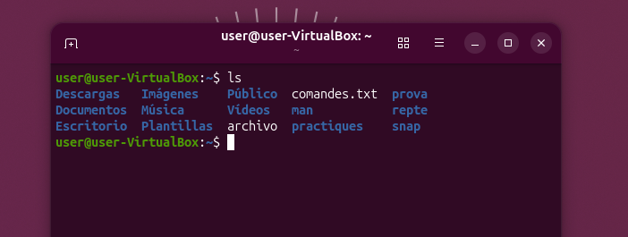
3. cd
La comanda cd permet canviar de directori.
Per exemple, amb cd Documents podem entrar a la carpeta Documents.
Comanda:
cd Documents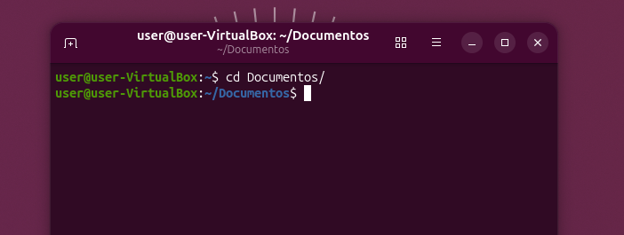
4. mkdir
La comanda mkdir serveix per crear una carpeta nova.
Per exemple, la següent comanda crea una carpeta anomenada proves.
Comanda:
mkdir proves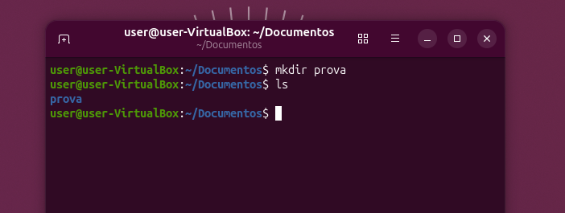
5. touch
La comanda touch permet crear un fitxer buit.
Per exemple, podem crear un fitxer de text anomenat exemple.txt.
Comanda:
touch exemple.txt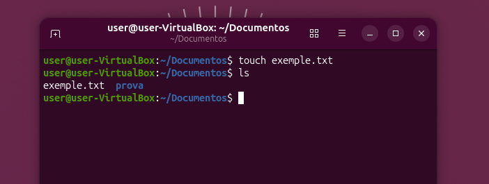
6. cp
La comanda cp serveix per copiar fitxers o directoris.
D'aquesta manera podem crear una còpia d'un fitxer i conservar l'original.
Comanda:
cp exemple.txt copia.txtAquesta comanda crea una còpia d'exemple.txt anomenada copia.txt.
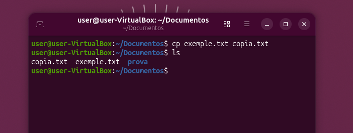
7. mv
La comanda mv serveix per moure fitxers o directoris a una altra ubicació.
També es pot utilitzar per canviar el nom d'un fitxer.
Comanda:
mv copia.txt a prova/Aquesta comanda mou copia.txt dins de la carpeta prova.
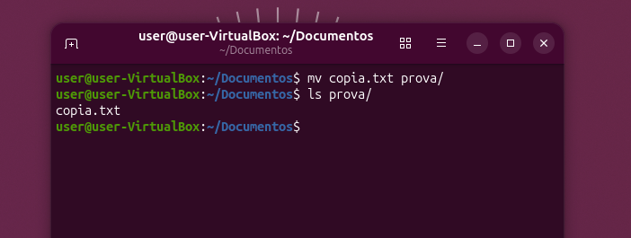
8. rm
La comanda rm serveix per eliminar fitxers.
Cal utilitzar-la amb precaució, ja que un fitxer eliminat amb rm normalment no passa per la paperera.
Comanda:
rm exemple.txtAquesta comanda elimina el fitxer exemple.txt.
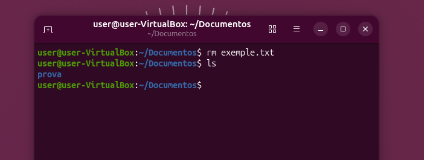
9. cat
La comanda cat permet mostrar per pantalla el contingut d'un fitxer de text.
És útil per consultar ràpidament un fitxer sense necessitat d'obrir un editor de text.
Comanda:
cat notes.txt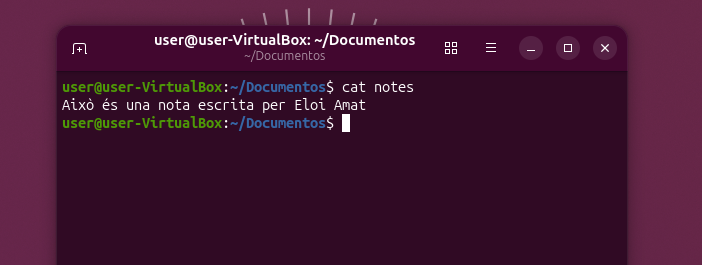
10. sudo
La comanda sudo permet executar una altra comanda amb privilegis d'administrador.
És necessària per realitzar determinades tasques del sistema que un usuari normal no té permisos per executar.
Comanda:
sudo comandaPer exemple:
sudo ls /rootAquesta comanda intenta mostrar el contingut del directori /root utilitzant privilegis d'administrador.
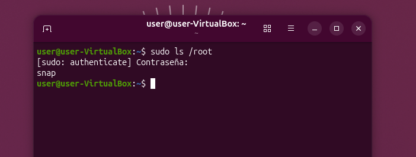
Fitxer de la pràctica
Aquest és el document que he creat utilitzant la comanda history. Aquesta comanda permet consultar l’historial de les ordres executades anteriorment al terminal. En aquest cas, he utilitzat l’historial per guardar les 15 últimes comandes que he executat.
Enllaç per descarregar el fitxer:
Descarregar el fitxer de la pràctica
↑ Tornar a l'índexAPARTAT 08
Instal·lació d'aplicacions
En aquest apartat explicarem pas a pas com instal·lar una aplicació mitjançant dos mètodes diferents: descarregant un paquet .deb des d'una pàgina web i instal·lant una aplicació directament des del terminal mitjançant els repositoris d'Ubuntu. Cal tenir en compte que, si volem instal·lar una versió concreta o una versió més recent que la disponible als repositoris, el paquet .deb pot ser l'opció més adequada.
1. Descarregar el paquet .deb des de la web
En aquest cas instal·larem Pacman. Per començar, accedirem a la pàgina de pkgs.org i buscarem el paquet corresponent a la nostra distribució d'Ubuntu.
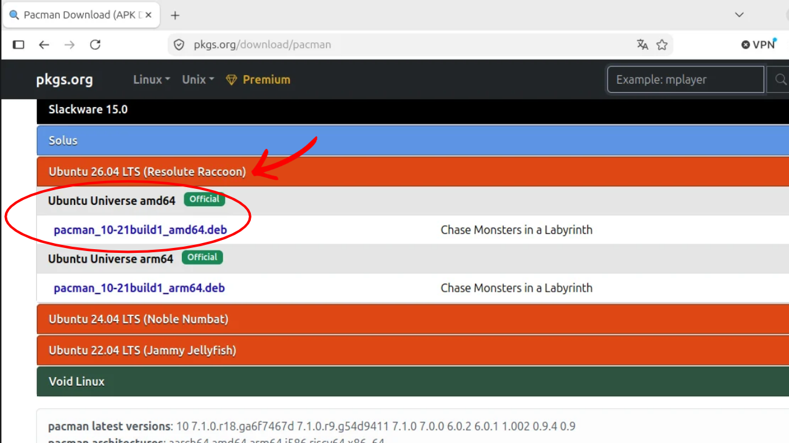
2. Descarregar el paquet
Un cop dins de la pàgina del paquet, copiarem l'enllaç que apareix a la captura i l'obrirem en una nova pestanya. D'aquesta manera començarà la descàrrega del paquet .deb.
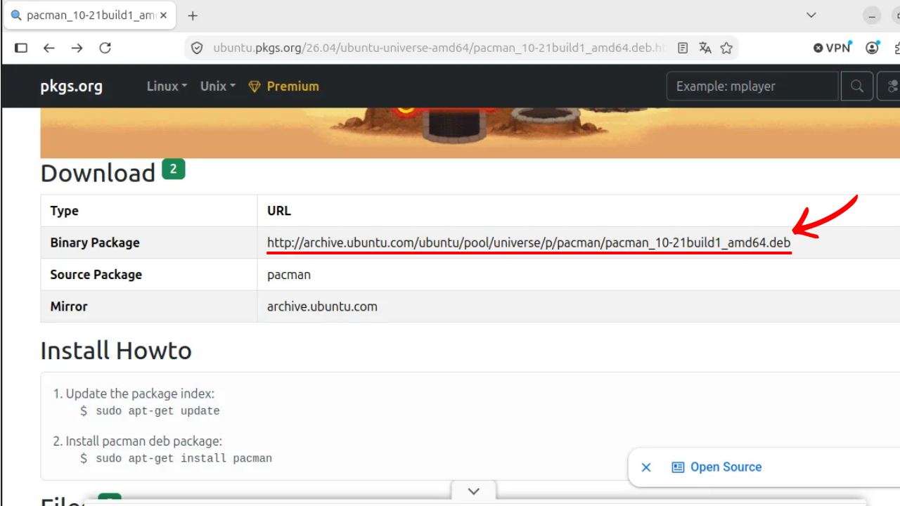
3. Accedir al directori de descàrregues
Un cop descarregat el paquet, obrirem una terminal amb la combinació de tecles Ctrl + Alt + T i accedirem al directori on s'ha desat. En aquest cas, entrarem a la carpeta Descàrregues i utilitzarem la comanda ls per comprovar el nom exacte del paquet.
cd Descàrregues
ls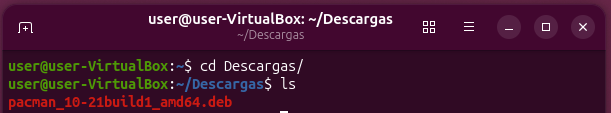
4. Instal·lar el paquet amb dpkg
Per instal·lar Pacman utilitzarem dpkg amb l'opció -i, que indica que volem instal·lar el paquet especificat.
sudo dpkg -i "nom.deb"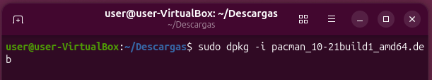
5. Comprovar la instal·lació
Un cop finalitzada la instal·lació, escriurem pacman al terminal. Si tot ha funcionat correctament, el programa s'hauria d'executar.
pacman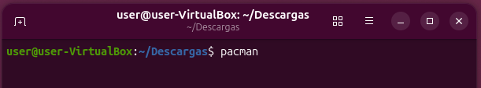

6. Desinstal·lar l'aplicació amb dpkg
Per desinstal·lar una aplicació instal·lada mitjançant un paquet .deb, obrirem el terminal i utilitzarem la comanda dpkg -r. En aquest cas hem d'indicar el nom del paquet instal·lat, sense l'extensió .deb.
sudo dpkg -r "nom-del-paquet"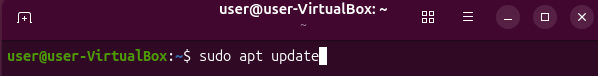
7. Comprovar que l'aplicació s'ha desinstal·lat
Per comprovar que l'aplicació ja no està disponible, intentarem executar de nou pacman des del terminal. Si s'ha desinstal·lat correctament, el sistema no hauria de trobar el programa.
pacman
8. Actualitzar la informació dels repositoris
Ara instal·larem Pacman mitjançant els repositoris d'Ubuntu. Primer actualitzarem la informació dels paquets disponibles amb:
sudo apt updateAquesta comanda actualitza la informació local sobre els paquets disponibles als repositoris configurats al sistema. No actualitza, per si mateixa, els programes ja instal·lats.

9. Instal·lar Pacman amb apt
Després d'actualitzar la informació dels repositoris, instal·larem Pacman amb:
sudo apt install pacmanEl gestor de paquets apt cercarà el paquet als repositoris configurats i, si està disponible, iniciarà la instal·lació.
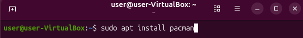
10. Comprovar la instal·lació amb apt
Un cop finalitzada la instal·lació, tornarem a escriure pacman al terminal per comprovar que l'aplicació funciona correctament.
pacman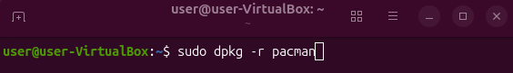
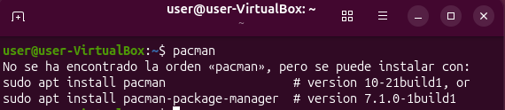
11. Desinstal·lar Pacman amb apt
Per desinstal·lar Pacman mitjançant apt, utilitzarem:
sudo apt remove pacmanLa comanda elimina el paquet, però no necessàriament elimina els fitxers de configuració associats.
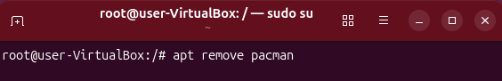
12. Comprovar que l'aplicació s'ha desinstal·lat
Per comprovar que l'aplicació ja no està disponible, intentarem executar de nou pacman des del terminal. Si s'ha desinstal·lat correctament, el sistema no hauria de trobar el programa.
pacman
13. Instal·lar Pacman amb aptitude
Com a alternativa a apt, també podem utilitzar aptitude. Per instal·lar Pacman escriurem:
sudo aptitude install pacmanaptitude és una eina de gestió de paquets que permet instal·lar, actualitzar i eliminar programari, i ofereix una gestió de dependències més interactiva.
El gestor de paquets apt cercarà el paquet als repositoris configurats i, si està disponible, iniciarà la instal·lació.
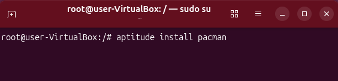
14. Comprovar la instal·lació amb aptitude
Un cop instal·lat, tornarem a executar pacman per comprovar que el programa funciona correctament.
pacman
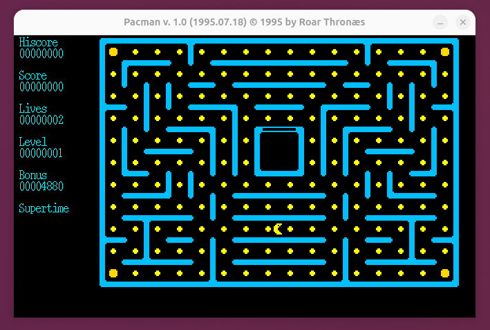
15. Desinstal·lar Pacman amb aptitude
Per desinstal·lar Pacman amb aptitude, utilitzarem:
sudo aptitude remove pacman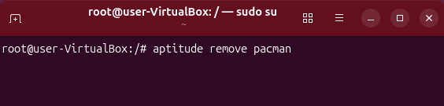
16. Comprovar la desinstal·lació
Finalment, podem executar pacman de nou per comprovar que el paquet ja no està instal·lat.
pacman
Comandes addicionals
1. Reparar dependències trencades
La comanda sudo apt --fix-broken install intenta reparar dependències que han quedat incompletes o paquets que no s'han pogut configurar correctament.
sudo apt --fix-broken install2. Consultar informació d'un paquet amb aptitude
La comanda aptitude show joe mostra informació detallada sobre el paquet joe, com ara la versió, la descripció, les dependències i el seu estat.
aptitude show joe3. Consultar les versions disponibles d'un paquet
La comanda apt-cache policy aptitude mostra informació sobre la versió instal·lada i les versions disponibles del paquet aptitude, així com els repositoris d'on provenen.
apt-cache policy aptitude4. Comprovar si Pacman està instal·lat
La comanda dpkg -l | grep pacman filtra la llista de paquets gestionats per dpkg i mostra les entrades relacionades amb Pacman.
dpkg -l | grep pacman5. Localitzar un executable
La comanda which nom mostra la ruta de l'executable associat a una comanda quan aquest es troba dins dels directoris definits a la variable PATH.
which nom6. Actualitzar el sistema amb dist-upgrade
La comanda apt dist-upgrade actualitza els paquets instal·lats i pot gestionar canvis de dependències que requereixin instal·lar o eliminar paquets per completar l'actualització.
sudo apt dist-upgrade7. Eliminar paquets descarregats de la memòria cau
La comanda apt clean elimina els fitxers de paquets .deb que apt ha descarregat i emmagatzemat a la memòria cau.
sudo apt clean8. Eliminar automàticament paquets que ja no són necessaris
La comanda apt autoremove elimina les dependències instal·lades automàticament que ja no són necessàries perquè cap altre paquet les utilitza.
sudo apt autoremove9. Consultar els paquets relacionats amb aptitude
La comanda dpkg --get-selections | grep apti mostra els paquets gestionats per dpkg que contenen apti al nom, cosa que permet localitzar paquets relacionats amb aptitude.
dpkg --get-selections | grep apti